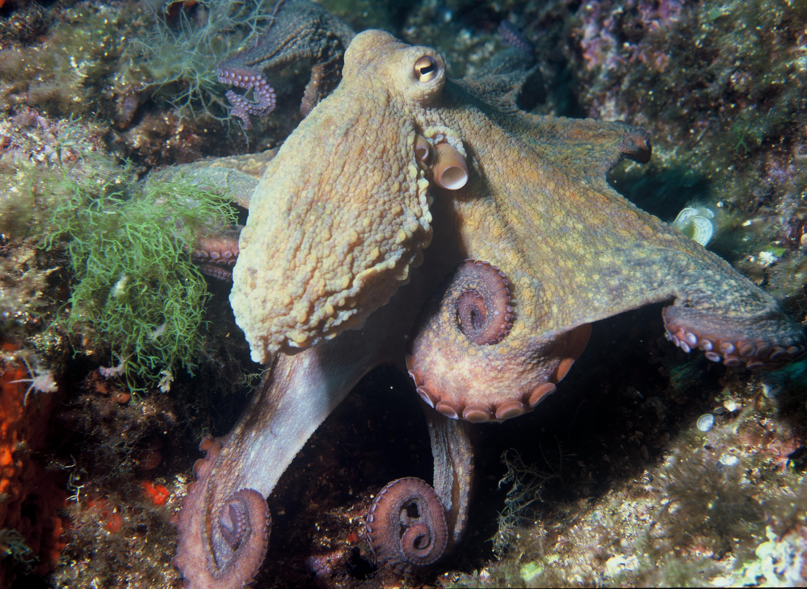

عصفور الشمس الفلسطيني
عصفور الشمس الفلسطيني، ويُسمى أيضًا تمير فلسطين ويُعرف بالإنكليزية (Palestine Sunbird)، هو من الطيور الصغيرة المقيمة والمشتية في لبنان. يمتاز الذكر بريش قزحي الألوان قد يظهر أخضر…
عصفور الشمس الفلسطيني، ويُسمى أيضًا تمير فلسطين ويُعرف بالإنكليزية (Palestine Sunbird)، هو من الطيور الصغيرة المقيمة والمشتية في لبنان. يمتاز الذكر بريش قزحي الألوان قد يظهر أخضر…

العُوَيْسِق أو العوسَق الصغير، ويُعرف بالإنكليزية باسم (Lesser Kestrel)، هو أحد أنواع الصقور التي تتكاثر صيفًا بشكل عَرَضي. ويُعتبر مهاجرًا عابرًا إلى لبنان، حيث يظهر في المناطق ش…

طائر الوروار الأوروبي، ويُعرف بالإنكليزية باسم (European Bee-eater)، هو طائر مهاجر شائع في لبنان. وقد سُجّل حديثًا وجوده في عدّة مناطق لبنانية خلال فصل الصيف، مما يطرح احتمال أن ي…

بومة المخازن أو بومة الحظائر وتعرف بالإنكليزية ( barn owl ) هي مُقيمة ومُفرخة شائعة ومنتشرة في لبنان على الساحل وفي الجبال وفي سهل البقاع يمكنها التكيف مع مجموعة واسعة من الموائل،…
في البراري الموحشة والمحيطات الهادئة، لا تحكم قوانين الغابة دائمًا بشريعة الجوع. ثمة مشاهد مدهشة في مملكة الحيوان تُسجل فيها جرائم قتل بلا هدف غذائي، بل بدوافع اجتماعية أو تناسلية…
صقر الشاهين ( Falco peregrinus ) ليس مجرد طائر جارح، بل أعجوبة طبيعية حقيقية أبهرت العلماء منذ عقود. إنه أسرع كائن حي معروف على وجه الأرض، إذ تصل سرعته أثناء انقضاضه إلى أكثر من 3…
في كل ربيع وخريف، تبدأ سماء الأرض باستقبال مشهد من أعظم عجائب الطبيعة: ملايين الطيور تنطلق في رحلاتها الشاهقة، تعبر قارات، تجتاز صحارى، تحلّق فوق البحار والجبال، دون أن تضل طريقها…
"ليست وحدها ذاكرة الفيلة طويلة… بل حزنها أيضًا لا يزول بسهولة" في قلب السافانا الأفريقية ، وبين ظلال الغابات الآسيوية، تتكرر مشاهد لا تخلو من الوقار والدهشة: مجموعة من الفيلة تحتش…
الصيد ليس هواية عابرة، بل مسار يعلّم الانضباط، الصبر، والمسؤولية. ومنذ اللحظة الأولى يجب أن يرى ولدك في الصيد رسالة لا رغبة، ومدرسة أخلاق لا ساحة قتال. إليك كيف تزرع فيه هذا الفهم…
منذ أكثر من مليونَي سنة، والصقر يحلّق فوق الأرض كأحد أقدم الطيور الجارحة التي عرفها التاريخ. لا يُعرف فقط بعراقته، بل بما يمثّله من قوة، دقة، وارتباط عميق بثقافات وشعوب عديدة حول…
حين نسمع عبارة "Game Birds" قد يظنّ البعض للوهلة الأُولى أنها تُشير إلى طيور تُستخدم في اللهو أو التسلية لكن الحقيقة أعمق بكثير، تعود إلى جذور اللغة والثقافة والصيد المستدام، كيف؟…
بين النظام والغريزة: حين تُجبر ظروف الطبيعة النحل على كسر قواعده الذهبية لطالما ارتبطت صورة النحل في المخيلة الإنسانية بالنظام الصارم، والعمل الجَماعي، والتضحية من أجل الخلية غير…
في زمنٍ يختلط فيه الصيد بالاستعراض، ويُمارس في بعض الأحيان كرياضة مجرّدة من الروح، يقف فيلسوف إسباني ليقول لنا: " الصيد ليس سلوكًا ضد الطبيعة، بل هو محاولة للدخول في صميمها ." هذا…
بين ظلال الغابات الصنوبرية ووديان الأرز العميقة، يرفرف طائر القرقف الفحمي (Coal Tit) بخفةٍ وذكاء، حارسًا صغيرًا للمكان، ورفيقًا صامتًا للأشجار اللبنانية العريقة. طائرٌ مقيم ومفرخ،…
بين الأراضي الرطبة والمروج العشبية التي يحتضنها سهل البقاع، يحطّ الزقزاق الشمالي (Northern Lapwing) رحاله شتاءً، كواحدٍ من أبرز الطيور المهاجرة التي تعبر سماء لبنان وتثري تنوّعه ا…
بين الغدران والمستنقعات التي تتناثر كالجواهر في قلب الطبيعة اللبنانية، تطلّ بين الحين والآخر زائرة نادرة، ذات وقارٍ ملكيّ ومظهرٍ آسر... إنها دجاجة السلطان رمادية الرأس (Gray-heade…
في أعالي الجبال اللبنانية، حيث تنبسط المروج وتتناثر الصخور، يطلّ طائرٌ مهاجر نادر، لا يظهر إلا عابرًا... كزائرٍ خجول يُدعى الدُّجّ المُطوَّق (Ring Ouzel)، طائرٌ شحيح التواجد، لكنه…
منذ فجر التاريخ، لم تكفّ الطيور عن إثارة دهشة الإنسان. كائنات تحلّق بحرّية، تعبر السماء بثقة، ثم تختفي فجأة مع تغيّر المواسم... لتعود في توقيت دقيق كما لو لم تغب قط. لقرون طويلة،…

في أعماق المحيطات، يعيش أحد أكثر الكائنات البحرية غرابةً ودهشةً الأخطبوط، الرخويّ المنتمي لطائفة Cephalopoda والذي يُصنّف كأذكى اللافقاريّات على كوكب الأرض بجسدٍ مرن، وثمانية أذرع…
في عالم الطيور، تتكرر المشاهد التي تُدهشنا بذكاء الكائنات وسلوكياتها الاجتماعية المعقدة، لكن قلّما نجد ظاهرة تُثير من التساؤلات كما تفعل "محكمة الغربان" تصرّف جَماعي غريب يُشبه مُ…
في أعماق الغابات الاستوائية الرطبة، قد يبدو المشهد مألوفًا: نملة صغيرة تمشي على غصن شجرة. لكن ما لا تراه العين هو أن هذه النملة لم تعد تملك زمام أمرها. لقد تحولت إلى "زومبي" حقيقي…
إدخال أنواع الطيور غير الأصلية إلى بلد مثل لبنان يُعتبر عملًا غير مُوصى به لعدّة أسبابٍ حيوية وبيئية. مثال واضح على التأثيرات السلبية لهذا الإدخال هو طائر المينا الشائع. هذا الطائ…
يشهد لبنان حاليًا تفاقمًا في ظاهرة الصيد الجائر وبيع الطيور البرية في متاجر الحيوانات الأليفة، وهي مشكلة تتسبب في تهديد كبير للنظم البيئية في البلاد. في الآونة الأخيرة، أوقفت قوى…
البوم مهمّة نحو الحفاظ على التنوّع البيولوجي البوم من الطيور المهمة للغاية في النظم البيئية، حيث تلعب دورًا حيويًا في الحفاظ على توازن البيئة الطبيعية. فهي طيور ليلية تتغذى على ال…